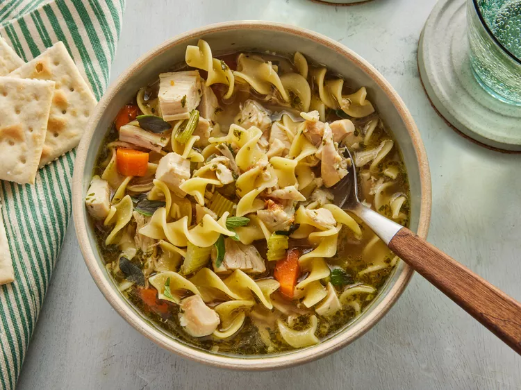

Chicken Noodle Soup

Desription
A delicious and hearty classic
Ingredients
- 12 cups water
- 9 cubes chicken bouillon (broth can be substituted for bouillon and water if desired)
- 1 cup chopped celery
- 1/4 cup chopped carrots
- 1/4 cup butter
- 1 tbsp dried parsley
- 1/2 tsp dried marjoram
- 1/2 tsp ground black pepper
- 1 bay leaf
- 8 ounces egg noodles
Steps
- Melt butter in a large stockpot over medium-high heat. Sauté celery and onion in hot butter until slightly softened.
- Add water, chicken, bouillon, carrots, parsley, marjoram, pepper, and bay leaf. Simmer for 30 minutes.
- Stir in noodles and simmer until pasta is tender, about 10 more minutes.
- Add any additional seasonings to taste, and enjoy!